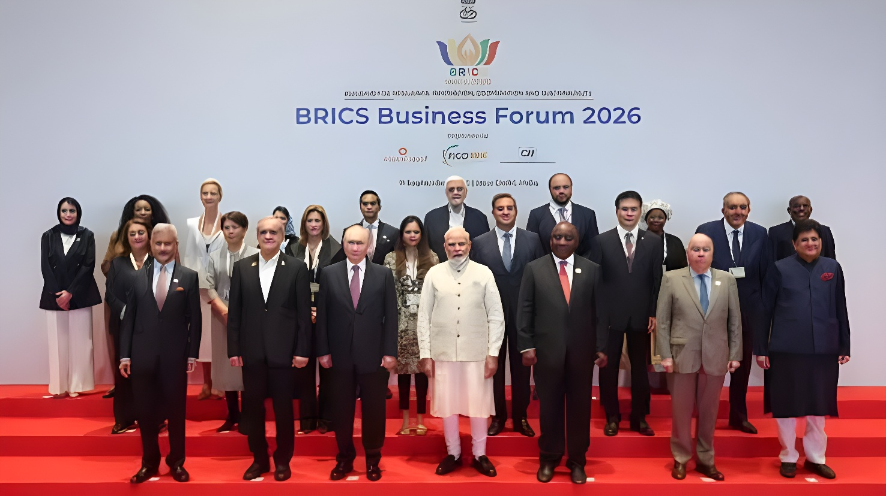

Réunis à Bharat Mandapam sous la présidence indienne, les dirigeants des BRICS ont adopté à l'unanimité, dès le premier jour du 18e sommet, un texte record de 140 paragraphes. Réforme de la gouvernance mondiale, appel à la « retenue maximale » au Moyen-Orient, critique des droits de douane unilatéraux : la déclaration affiche une unité de façade qui masque mal les lignes de fracture entre ses onze membres, de l'Iran aux Émirats arabes unis.
Le 12 septembre, dès la séance plénière à huis clos réservée aux membres du groupe, les dirigeants des BRICS réunis à Bharat Mandapam, le grand centre de conventions de New Delhi, ont approuvé sans réserve la Déclaration de New Delhi. Le Premier ministre indien Narendra Modi, qui présidait les débats, a lui-même annoncé le consensus en séance, précisant qu'aucun État membre n'avait soulevé d'objection. Le texte, qui réaffirme les trois piliers traditionnels du groupe — coopération politique et sécuritaire, coopération économique et financière, échanges culturels et humains — comptabilise également plus de 400 réunions tenues dans une trentaine de villes indiennes au cours de l'année de présidence indienne.
Cette unanimité contraste avec l'échec, en mai 2026, d'une réunion des ministres des Affaires étrangères des BRICS à New Delhi, qui s'était soldée sans communiqué commun faute d'accord sur la guerre au Moyen-Orient, contraignant l'Inde à publier une simple déclaration de la présidence. Selon plusieurs médias spécialisés, l'accord trouvé quatre mois plus tard tient largement à un travail diplomatique discret mené par New Delhi pour rapprocher les positions de l'Iran et des Émirats arabes unis, deux membres aux intérêts régionaux directement opposés.
Le passage le plus scruté du texte porte sur le Moyen-Orient, théâtre depuis plusieurs mois d'une guerre impliquant l'Iran, Israël et les États-Unis. La déclaration se dit « profondément préoccupée » par l'escalade des tensions et appelle à une « retenue maximale », à la protection des civils et des infrastructures civiles, au respect de la souveraineté et de l'intégrité territoriale, ainsi qu'à un règlement durable par le dialogue. Elle réaffirme son soutien à l'accès humanitaire à Gaza et à l'agence onusienne UNRWA, tout en évitant soigneusement de condamner nommément les frappes américano-israéliennes ou les tirs iraniens visant des pays du Golfe. Sur l'Ukraine, le texte se borne à rappeler les positions nationales divergentes des membres et à saluer les initiatives de médiation en cours.
La déclaration condamne en revanche explicitement l'attentat de Pahalgam d'avril 2025, au Cachemire indien, et réaffirme une « tolérance zéro » envers le terrorisme, y compris son financement, ses refuges et la circulation transfrontalière des combattants. En marge du sommet, le président iranien Masoud Pezeshkian et le représentant émirati Khaled bin Mohamed Al Nahyan ont tenu, le 12 septembre, la rencontre la plus élevée entre les deux pays depuis le début de la guerre régionale de 2026 — un signe tangible que la diplomatie indienne était parvenue à faire dialoguer les deux camps avant même la publication du texte final.
Forum des affaires des BRICS et exposition « Bharat Innovates » à Bharat Mandapam. Entretien bilatéral entre Narendra Modi et Vladimir Poutine sur le commerce, l'énergie et la défense.
Plénière à huis clos des membres du groupe ; adoption à l'unanimité de la Déclaration de New Delhi. Rencontre Modi-Xi Jinping, première visite de Xi en Inde en sept ans.
Photo de famille, plantation d'arbres et dîner de gala offert par Narendra Modi aux chefs d'État et de gouvernement présents.
Plénière ouverte élargie aux pays partenaires, invités et organisations internationales, sur le thème de la résilience et de la croissance inclusive.
Sur le plan institutionnel, la déclaration appelle à un système multilatéral plus représentatif et à une participation accrue des pays émergents et en développement dans les institutions internationales, en particulier au Conseil de sécurité de l'ONU. Elle critique également la multiplication des mesures tarifaires et non tarifaires unilatérales, réaffirme son attachement à un système commercial fondé sur des règles et centré sur l'Organisation mondiale du commerce, tout en réclamant des réformes donnant davantage de poids aux économies en développement. Le texte s'oppose enfin aux mesures coercitives unilatérales non autorisées par le Conseil de sécurité de l'ONU — une formulation qui, selon plusieurs analyses reprises par la presse économique, vise sans le nommer le régime de sanctions américain.
Sur le plan financier, la déclaration soutient la poursuite des travaux du groupe de travail BRICS sur les paiements, chargé d'améliorer l'interopérabilité des systèmes de paiement et de messagerie financière nationaux, ainsi que le règlement des échanges en monnaies locales. Aucune monnaie commune des BRICS n'a en revanche été instaurée. Les membres encouragent la Nouvelle Banque de développement à développer son financement en monnaies locales et poursuivent leurs discussions sur une éventuelle « nouvelle plateforme d'investissement ».
« Aucun membre n'a soulevé d'objection. La Déclaration de New Delhi 2026 est adoptée à l'unanimité. »
— Narendra Modi, Premier ministre indien, 12 septembre 2026La déclaration décrit la sécurité énergétique comme un fondement du développement et appelle à des marchés stables et des infrastructures résilientes, tout en affirmant que les énergies fossiles continueront de jouer un rôle important dans le mix énergétique des économies émergentes. Elle réaffirme dans le même temps son soutien à une transition énergétique « juste, ordonnée, équitable et inclusive » et à la mise en œuvre de l'Accord de Paris. Sur le plan technologique, les membres saluent la coopération engagée sur l'intelligence artificielle, les infrastructures numériques publiques et les technologies quantiques, avec la création d'un réseau d'incubateurs BRICS et l'examen d'un fonds dédié aux jeunes entreprises innovantes.
En matière de santé, le texte entérine une mission BRICS pour un mode de vie sain assortie d'une feuille de route 2026-2029, ainsi qu'un réseau de centres d'excellence en santé mentale coordonné par un institut indien de référence. En agriculture, il soutient la poursuite des travaux sur une bourse céréalière commune et sur la sécurité alimentaire. Les membres ont enfin exprimé leur soutien à la présidence chinoise du groupe en 2027 et à la tenue du 19e sommet en Chine.
| Sommet | Année | Longueur du texte |
|---|---|---|
| Xiamen | 2017 | 71 paragraphes |
| Rio de Janeiro | 2025 | 126 paragraphes |
| New Delhi | 2026 | 140 paragraphes |
En évitant de nommer les États-Unis dans ses critiques des droits de douane et des sanctions unilatérales, et en s'abstenant de condamner nommément un camp dans la guerre au Moyen-Orient, New Delhi a privilégié la formule la plus consensuelle possible pour préserver l'unité d'un groupe désormais composé d'onze membres aux intérêts parfois opposés, de l'Iran aux Émirats arabes unis. Pour la presse internationale, ce choix illustre la ligne défendue par l'Inde : faire vivre les BRICS comme un espace de coopération pratique — commerce, santé, énergie, numérique — plutôt que comme un bloc géopolitique frontalement dressé contre l'Occident, position que d'autres membres, à commencer par la Chine et la Russie, auraient souhaité plus offensive. La déclaration adoptée à New Delhi n'efface donc aucune des divergences internes au groupe ; elle organise seulement leur coexistence, jusqu'au prochain sommet, présidé par Pékin en 2027.